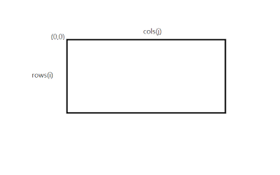
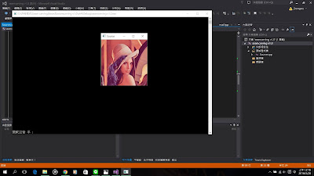

OpenCV 簡介
Publish Date : 2016-03-28 00:22
上一篇說到我會重新開始學習OpenCV
並且學習使用Mat的資料結構
現在就讓我重新認識OpenCV
include 的函式檔中
- cv – 核心函數庫 在OpenCV2，為opencv.hpp，每次使用CV一定會先include
- core – 數據結構與線性代數庫 在OpenCV2，為core.hpp
- highgui – GUI函數庫 在OpenCV2，為highgui.hpp
目前這三個是我比較常用到的
OpenCV中有Mat、cvMat、IplImage這三種資料結構，都可以表示為圖像
Mat重於數學矩陣的運算
而cvMat跟IplImage則是重於"圖像"上的計算
目前著重於Mat上
所以就挑著Mat來說吧
Mat是OpenCV2提出的新的資料結構，Mat比較方便記憶體的存取，會自動釋放記憶體，不用像IplImage要手動釋放。Mat可以用來處理向量、矩陣、圖像等多維的數據
一開始當然是include
#include <iostream>
#include <opencv2\opencv.hpp>
#include <opencv2\core\core.hpp>
#include <opencv2\highgui\highgui.hpp>
using namespace std;
之後就可以開始宣告矩陣(圖像)
創造一個名為 src 的 Mat 矩陣
Mat src;
假設為640*480 三通道影像
src.create(480, 640, CV_8UC3);
當然一開始也可以直接宣告
Mat src(480, 640, CV_8UC3);
宣告函式為 ( rows, cols , channels)
rows是矩陣的高度(height)
colsr是矩陣的寬度(width)
channels 是矩陣的資料結構

通常影像處理左上角為原點( 0 , 0 )
cols 為 j, rows 為 i
以後要處理矩陣的數值的時候會用到
而channels 有很多種
CV_8UC1 CV_8SC1 CV_16UC1 CV_16SC1 CV_32SC1 CV_32FC1 CV_64FC1
CV_8UC2 CV_8SC2 CV_16UC2 CV_16SC2 CV_32SC2 CV_32FC2 CV_64FC2
CV_8UC3 CV_8SC3 CV_16UC3 CV_16SC3 CV_32SC3 CV_32FC3 CV_64FC3
CV_8UC4 CV_8SC4 CV_16UC4 CV_16SC4 CV_32SC4 CV_32FC4 CV_64FC4
8U 8位元無符號
16U 16位元無符號
32F 32位元浮點數
後面的C為通道數
數據可以直接跟uchar,short,int,float,double型別通用
也可以在創建矩陣時，就賦予矩陣初始值
Mat src(240,320,32FC1, Scalar(5));
讀取名為Lena的圖片
src = imread("Lena", 1);
顯示出圖案
先創建顯示視窗
cvNamedWindow("Lena",1);
imShow("Lena", src);
最後加上
waitKey(0);
可以在顯示圖案後，等待有按鍵鍵入才結束
最後記得釋放視窗
destroyWindow("Lena");
如圖所示:

今天就先複習到這
希望自己的程式能力越來越好
just keep my road.